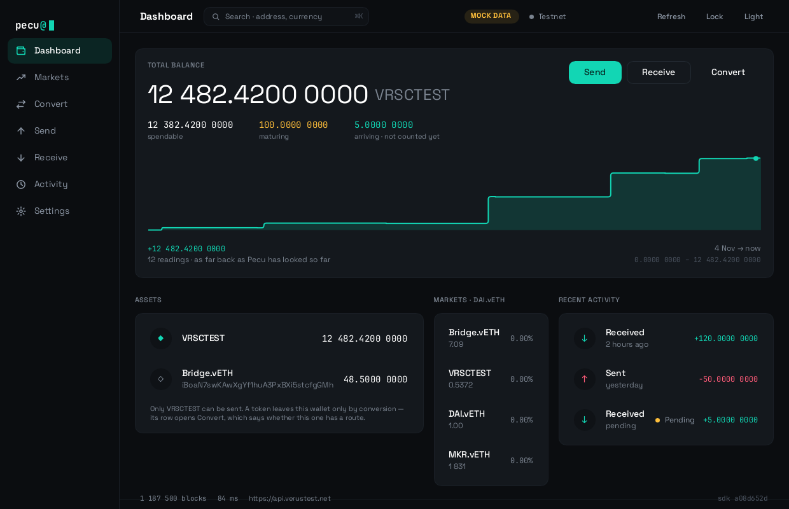
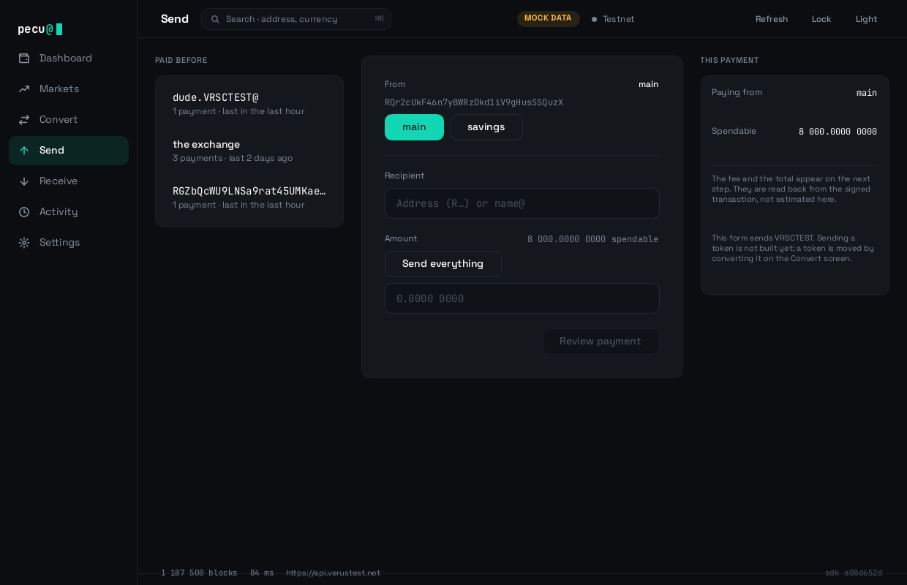
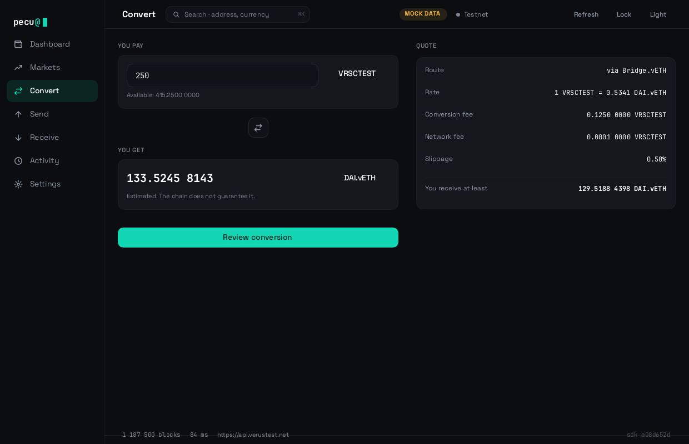
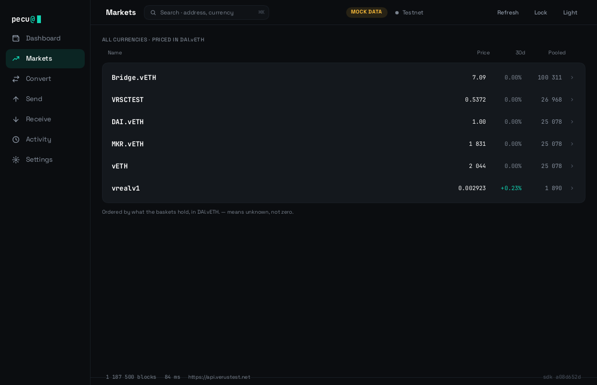
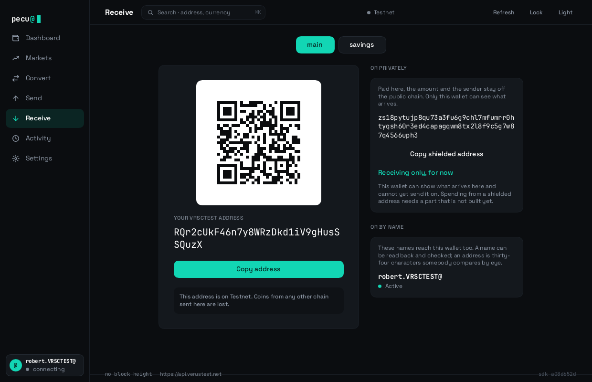
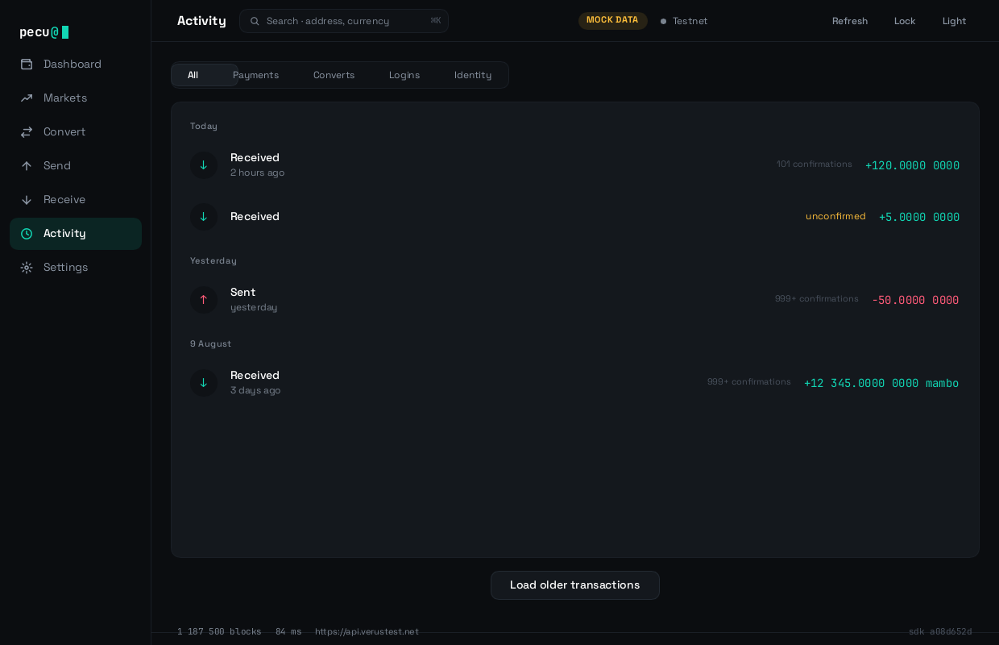

// your identity. your money. your wallet.
A self-custodial desktop wallet for Verus. Rust and Slint, one binary, no runtime to install.
Windows, macOS and Linux. Your keys never leave the machine, and the interface is structurally unable to name the types that carry them.
There are no releases, and this page deliberately offers no downloads.
The application has only ever been built and run on macOS, and that build is unsigned, so Gatekeeper blocks it anywhere but the machine that produced it. The Linux install script was written against the freedesktop specifications and has never been run on Linux. Nothing has been built on Windows at all. A wallet is not something to install on the strength of a website, so the honest thing is to say so here rather than further down.
Screens
These are not mockups. Every image below is a checked-in reference screenshot that the test suite renders and compares on each run — 150 of them, in both themes. A layout change nobody looked at fails the build.






How it is built
The interface crate does not depend on the SDK, the keystore or the core — so Rust will not resolve the types that carry private keys inside it. That is a compile error, not a code review comment, and a test fails the build if the dependency list grows.
| Crate | What it is |
|---|---|
| pecu-app | The binary. Wires callbacks to commands and owns the window. |
| pecu-ui | The Slint interface. Holds no keys, and cannot name the types that carry them. |
| pecu-protocol | The contract between the two. No SDK, no crypto, no I/O. |
| pecu-core | The wallet actor: owns all state, does all I/O, free of any UI toolkit. |
| pecu-keystore | Private keys on disk, encrypted. The only crate that may hold a private key. |
| pecu-chain | The node client, node health, and the permit that gates spending. |
| pecu-store | What survives a restart: settings, and a cache it can always throw away. |
| pecu-chart | Chart geometry. Pure arithmetic, no dependencies. |
| pecu-mock | A scripted chain. No source file in it names a transport, a URL or a socket. |
Decisions
Most of the interesting parts of a wallet are the places it declines to be clever.
A key can hold transparent and shielded funds. The wallet could pick whichever covers the amount — and that would be choosing, on somebody's behalf and without telling them, whether the payment is traceable. It asks.
What you confirm is decoded from the transaction that was actually built, not re-rendered from what you typed. The outputs, the fee and the change are read back.
An unknown price is a dash. A pool nobody has scanned says so rather than reporting nothing. A zero is a number somebody measured.
Anything that could move real money sits behind a typed confirmation — not only the main chain. Only the one chain positively known to be worthless is exempt.
A node's word about which chain it is on is a claim, not a fact. Where a second endpoint is available, the coins a spend is funded from are held against it.
A test walks the log files and fails the build if a key, a passphrase or a recovery phrase appears in one.
Checks
Some of these are the point of the project rather than a formality. All four halves run on every pull request.
visual.rsA layout change nobody looked at. Renders every screen in both themes and compares against checked-in references.
accessibility.rsA control a screen reader announces as “button” and nothing else.
dependency_boundary.rsThe interface crate gaining the ability to name a private key.
log_hygiene.rsA secret reaching a log file.
translation.rs“It is ready for translation” being false.
no_network_stack.rsThe scripted chain learning to reach a network.
cargo denyA known-vulnerable or abandoned dependency, a licence the project may not ship, or a crate touching key material arriving at two versions.